For what purposes is it being used?
A bit of theoryThe portable GPS receiver Garmin Dakota® 20
BaseCamp: before for the first time turning on a receiver
Andrey Kuznetsov, Cand. Med. Sci., Senior Researcher
Kazakh Scientific Center for Quarantine and Zoonotic Diseases
For what purposes is it being used?
A bit of theoryThe portable GPS receiver Garmin Dakota® 20
BaseCamp: before for the first time turning on a receiver
In this lecture we'll look at principles of work with spatial data using the Global Positioning System.
The spatial epidemiology deals with the description and analysis of territorial (geographic) diseases' distribution:
The geographic coordinates for inclusion of them in spatial data can be obtained in geodetic surveys using a theodolite (the oldest way)...
By investigation of geographical objects with known coordinates (digitization of old maps).
Obtaining coordinates of known geographical objects (human settlements) is possible in the specialized sites, such as LatLong ...
or in the program Google Earth.
The Global Positioning System is a satellite navigation system providing measurement of distance, time and and defining location in the global coordinate system WGS 84. It allows to measure location and speed of objects in any place of Earth (excluding subpolar areas) almost under any weather conditions, and also in a near-earth space.
The global coordinate system WGS 84 is used in projects of the free GIS, Quantum GIS.
GPS consists of three main segments: space, control, and user.
A radar transmits a short radio impulse of great power. This impulse is emitted in one direction depending on orientation of an antenna and spreads with the speed of light c0.
If the direction of the impulse spread has an obstacle, radio wave disperses in all directions. A small portion of the impulse is reflected back to the radar.
The return time of a radio wave t is proportional to a distance to an obstacle R, which can be calculated (in the elementary case) by formula: \[ R = {{c_0 \times t} \over 2} \]
It is an example of the linear coordinate of object measurement.
Principle: GPS satellites transmit a signal from space, and all GPS receivers use this signal for calculation of their location by three coordinates in real time.
For estimation of three-dimensional coordinates x, y and z the GPS receiver need to have the solved equation "distance are equal to the product of speed of light and a difference of the user's signal reception moments and the moment of its synchronous emission from satellites" for all i satellites:
\[ d_i = c_0 \times (t_{t,i} - t_{r,i}) + t_c = \sqrt{(x_i - x)^2 + (y_i - y)^2 + (z_i - z)^2} \]
Accuracy of estimation of an object location with GPS affect is influenced by many factors. For example, it can be atmospheric phenomena. The delay of the returned signal can be caused by action of a solar wind and the geomagnetic phenomena in the ionosphere. This delay can be up to 300 nanoseconds, which causes an error in determining the position of an object up to 100 meters (J. A. Klobuchar, 1981). In general the bias of time estimation of the returned signal are 10 nanoseconds (3 - 5 meters).
GPS signals are distorted by:
It is clear that any physical obstacle on the impulse way distorts the measurement's result. Remember the following rules:
| 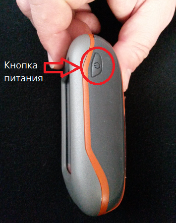 |
|
| 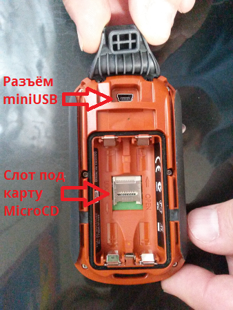 |
|
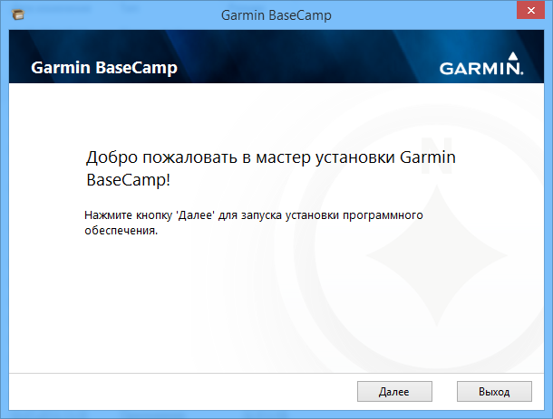
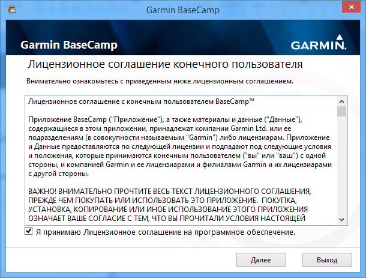
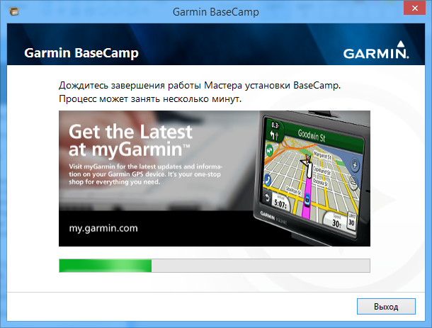
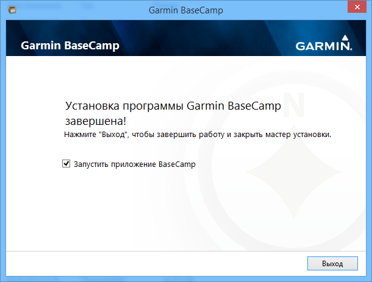
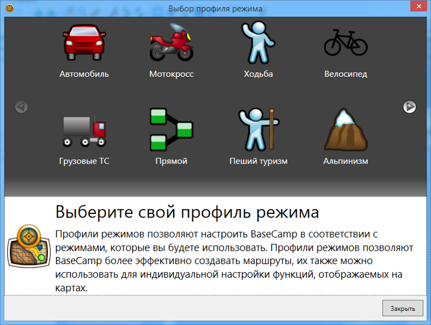
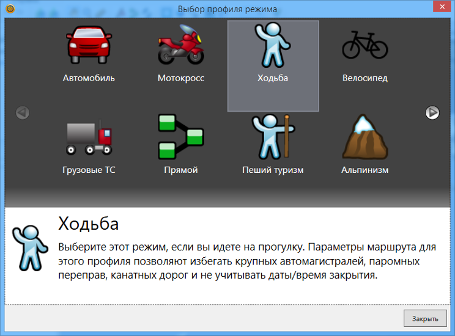
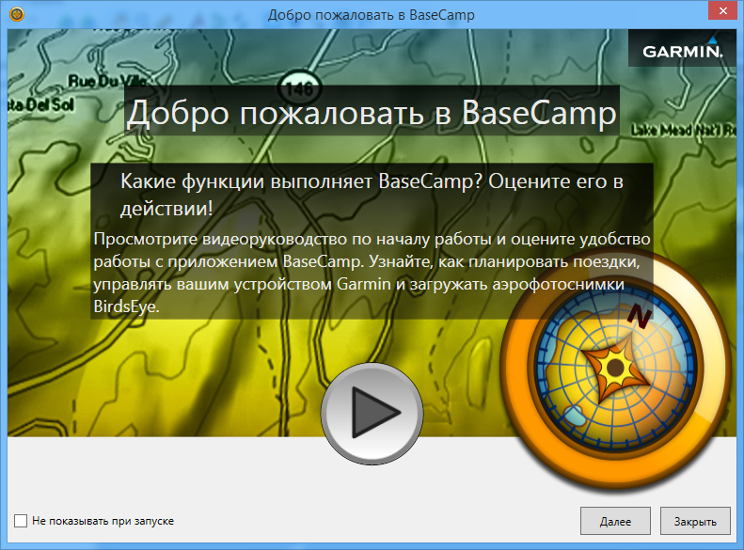
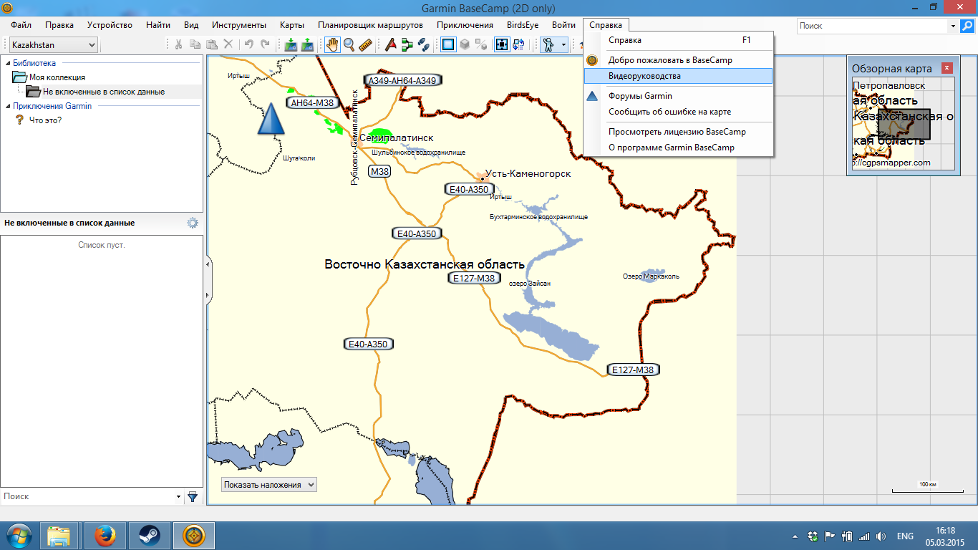
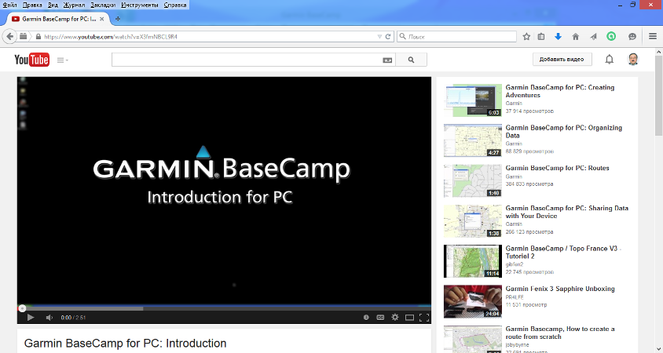
Click on the menu item makes transition to the page Youtube with the training videos about work with the programme (in English).
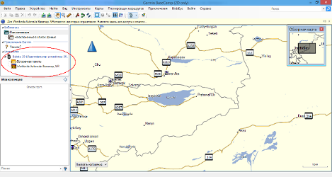
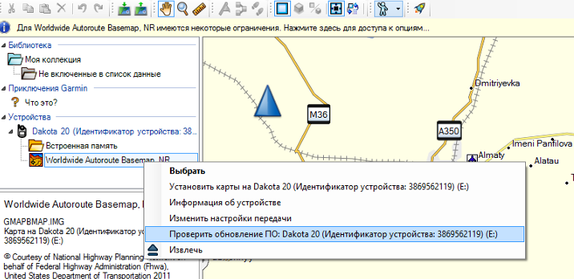
Click the right mouse button on the icon of preinstalled maps and select in the context menu "Check for software updates: Dakota 20".
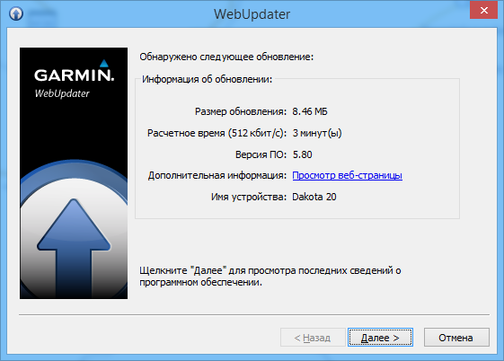
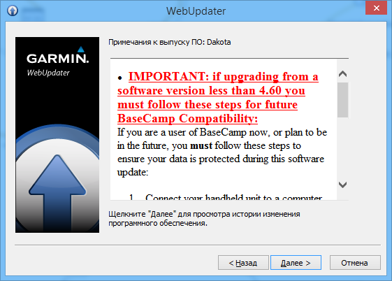
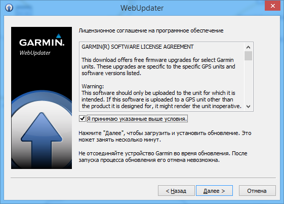
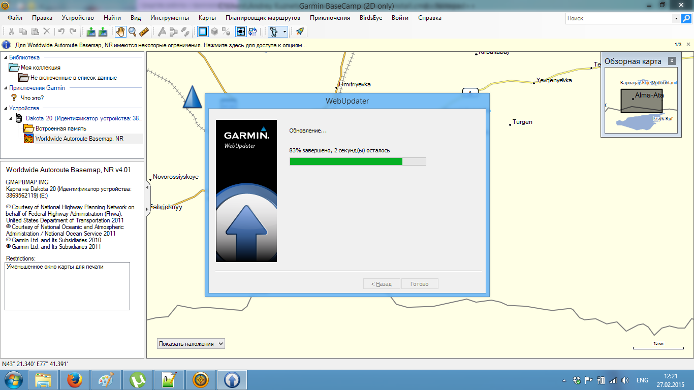
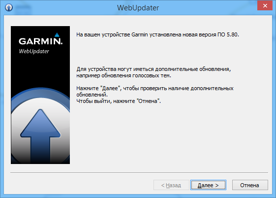
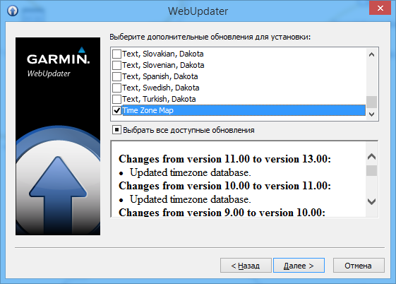
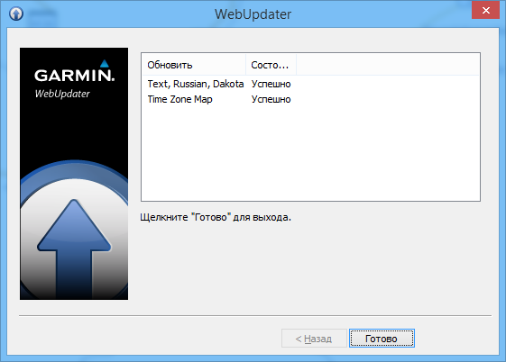
|
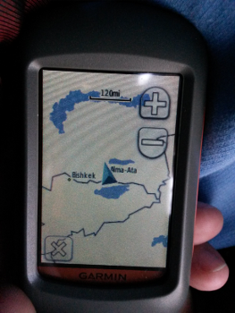 |
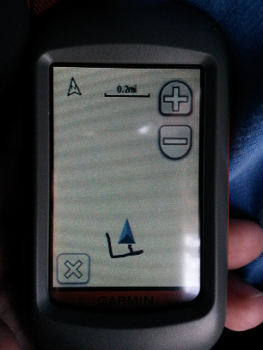 |
Unfortunately, the preinstalled map on the Garmin Dakota has a low level of details. This circumstance makes it inappropriate for epidemiological work and requires installation of the additional maps.
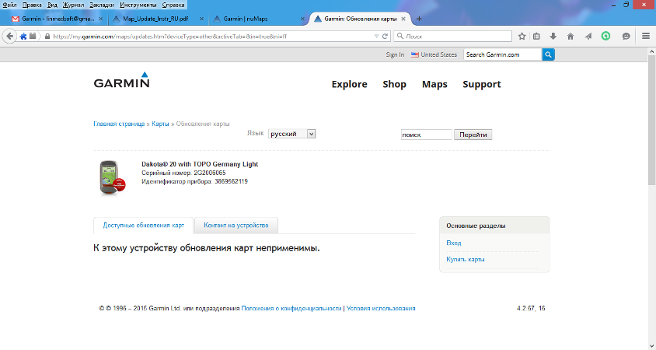
Lets install the free distributed map of Kazakhstan (based on OpenStreet Map) on the Garmin Dakota.
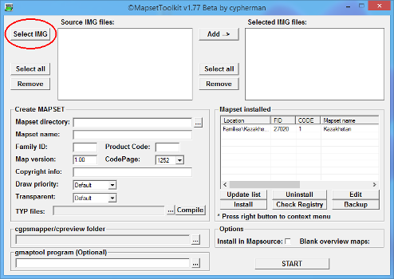
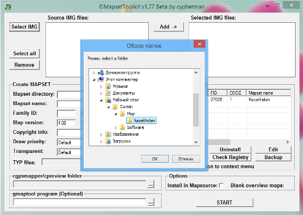
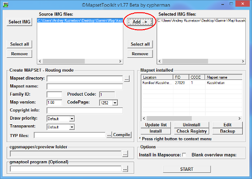
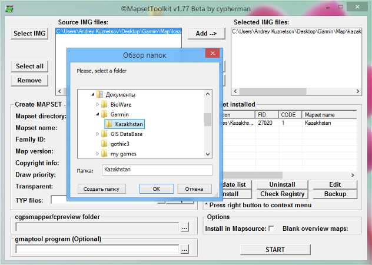
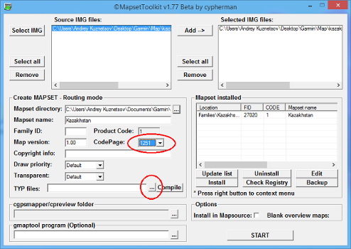
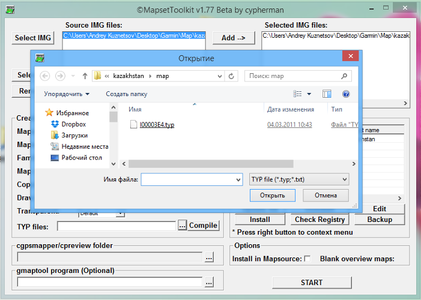
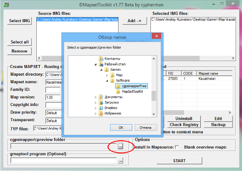
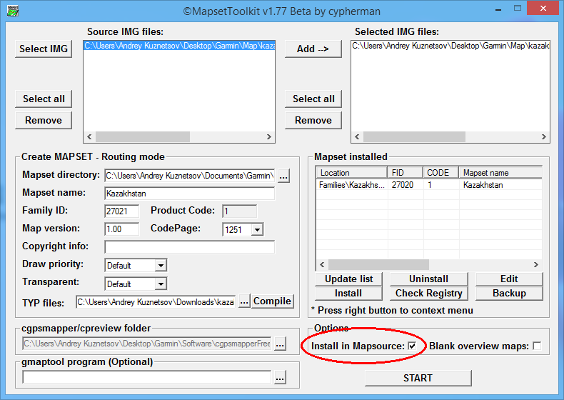
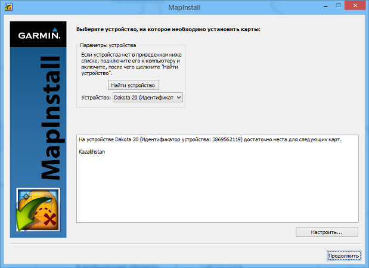
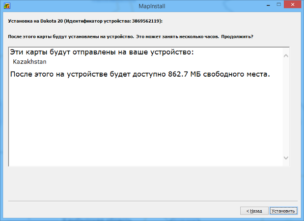
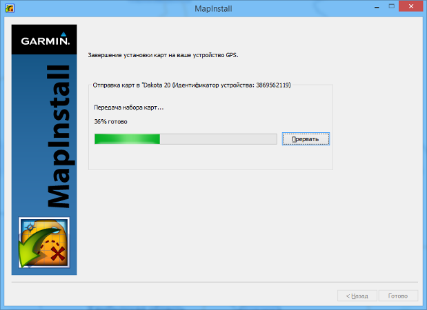
With what number of satellites the Garmin Dakota device has to establish connection for correct estimation of geographical coordinates?
It is necessary one satellite for each coordinate in three-dimensional space plus at least another one - for the correction of the coordinates.
One satellite only allows you to estimate the distance between objects. Two satellites allow us to estimate the coordinates in two-dimensional space, three allow do this in three-dimensional (x, y, z). However, as at scattering a signal from satellites with obstacles and the atmospheric phenomena, the error in estimation of coordinates arises, the larger number of satellites is necessary for correction of calculation. Therefore the correct answer is 4.
What influences quality of the signal received from satellites?
The signal delay is a cause of coordinate inaccuracy estimation.
Quality of the signal received from satellites is influenced by the atmospheric phenomena, electromagnetic fields and any physical obstacles. Therefore the correct answer is 4.
For calculation of the current location the receiver during particular time has to collect necessary satellite data. Distinguish three modes of location estimation by the receiver: cold, warm and hot start.
For calculation of the current location the receiver during particular time has to collect necessary satellite data. Distinguish three modes of location estimation by the receiver: cold, warm and hot start.
Turn on the device for the main menu appearance.
|
|
In the main menu press the button "Settings" for pass to the page of settings of the device.
|
|
Unfortunately, WAAS acts only on the territory of North America. Therefore we need to switch on the normal GPS mode.
On your Garmin Dakota device it is necessary to switch-off all maps, except earlier installed map of Kazakhstan.
Self-dependent work
There are some methods of creation way or, in the terms of the Garmin Dakota, route points.
Creating and changing routes happens using "Route page" (to access it you should press “The routes planner".